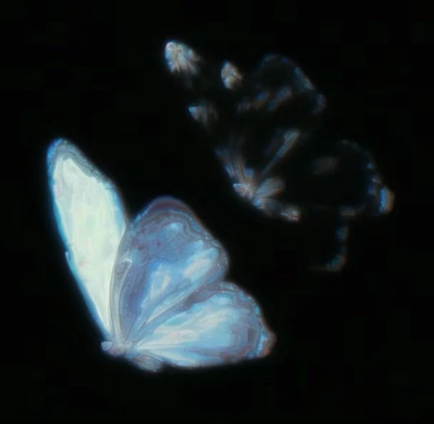
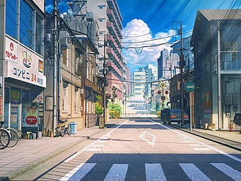

This was the first piece I created that truly felt like the best I'd created by far. Created on the 8th of April, it symbolizes and effectively summarizes the power of spontaneity and intention when one considers emotional impact on certain events, occassions, or whatever the situation effectively calls for.
My Curated Gallery

Welcome to my library! In this page, I have curated the best out of my personal projects from across a range of skillsets and endeavors that I've undertaken, mainly revolving around musical pursuits. The main component of my music production is my DAW, which is Ableton Live 12 Suite (by Ableton AG).
I also occassionally upload my music on SoundCloud, which has been linked below!
My Music Selection
a fresh start.wav
night out.wav

This is the first piece as of late that I've made that encapsulates a new journey. I delved into a new genre, mainly focused on slow beats and lo-fi based instrumentalization, following the expected chord progressions and focusing also on the emotional output of the song itself. I consider this the first step to many feats.
[as].wav

This is an older piece, when I was first exploring different sounds, as well as learning more about VST plugins. Back then, my compositions revolved around synthesizers, automations, and attempts at mixing. Though I've since improved, it makes for a great piece to look back on from that era.
old times.wav
This is the first piece I created that truly felt like the best I'd created as of this month (July, 2025). For this piece, I experimented with different piano chords, and also used spatial audio effects (reverb) to really build the piece's environment to its fullest! This being the first of its kind, there is surely more to come!
space.wav
This is the second piece as of late that has attempted to emulate spatial ambience. Diving deeper, I focused on giving this piece a sound structure to start with in comparison to the first of its kind. It also combines pitch shifting, allowing for a better transition, as well as giving a fresh perspective on the same piece!
lights out.wav
This piece focuses on human spontaneity, and the ability to adapt to any situation. Inspired by a real-time scenario (a blackout), I chose to dive fully into what can be drawn from a blank slate. Linking to experimenting with ambience, this piece employs percussive techniques to amplify its instrumentalization!
More displays are soon to be added to this gallery, detailing my accomplishments, either in programming, or still within my musical experiences.
Leave a Message!
Please feel free to contact me for any more information below!